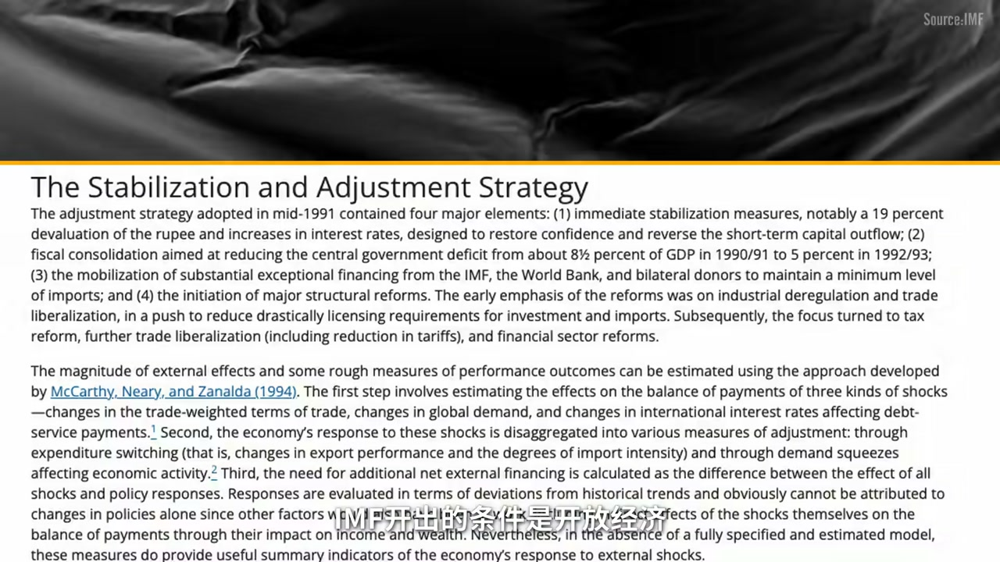
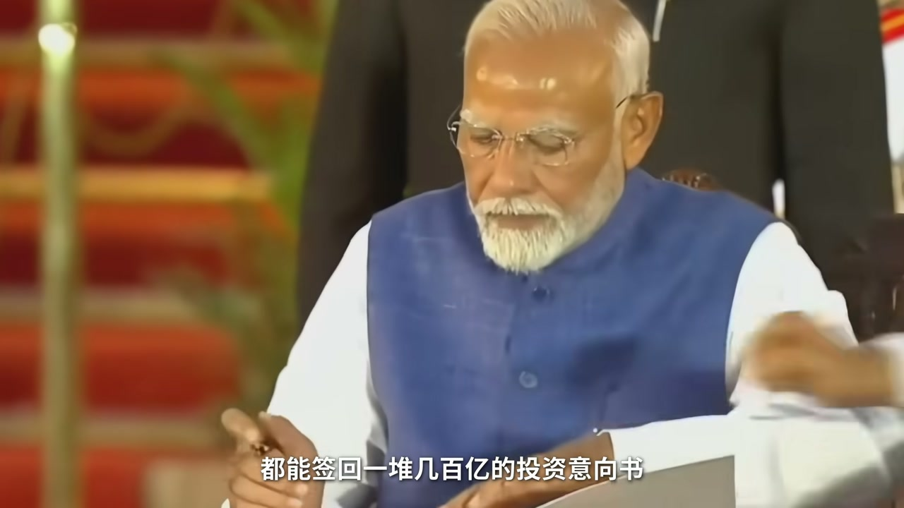

内容要点
从尼赫鲁许可证管制与「印度教徒增长率」，到 1991 年濒临破产后的开放红利、莫迪废钞/GST/印度制造，账面增速亮眼；但非正式就业、跳过制造业、精英外流、净外资接近归零与家庭债务攀升，共同指向「三大错位」。
知识结构
特朗普口径反转、换基 GDP；建国后许可证锁死 K/L/A，1991 危机后改革，莫迪把增速叙事推到第五。
跳过制造业上楼；硕博抢清洁工、科塔刷题；ISRO/IIT 人才去硅谷；IT 外包遇 AI。
总流入≠净流入；沃达丰追溯税、卢比贬值；最低工资八年不动，顶端财富狂飙。
别只看全球增速排名：问电梯（制造业）建了没有、精英是否留下、净外资是否留下、普通人实际工资是否上涨。
00:00-05:30死亡经济、换基 GDP 与改革简史
开场对照：特朗普社交媒体把印度与俄罗斯并称「死亡经济」并加征高关税，半年后改口「最伟大的朋友」、关税回落；几乎同时印度调整 GDP 统计基准，增速冲高而总量缩水约 12 万亿卢比。叙事与算法一起晃动，才引出「增长冠军奖杯里有多少空心」的问题。
回溯建国：殖民抽干后的低识字、农村锁定与薄弱工业；尼赫鲁选高关税、政府主导重工业、严限外资，用许可证把产什么、卖多少、卖给谁都纳入审批。结果本土资本难长、劳动力困在碎片土地、大科学与民间产业隔离——长期约 3.5% 增长被嘲「印度教徒增长率」。
1991 年外汇储备仅够两周进口，海湾战争与苏联解体压垮收支，被迫接受 IMF 条件：降关税、放外资、拆管制。IT 外包起飞后增速上到 6%–7%；2014 年莫迪以废钞令、GST、印度制造叠供应链转移，账面冲到全球第五——但换基后「超日」剧本又搁浅。

05:30-12:30人多用不好、天才为别人打工
第一层错位在劳动力：约 85% 在非正式部门，缺合同社保；人均收入与日本差约 12 倍。正常路径是农业→制造业→服务业，印度却从种地跳到写代码，中间承接普通劳动力的「二楼」几乎空着——土地、电力、港口、许可证都是硬伤，英语+IT 成了阻力最小的出口。
对照孟加拉成衣业：女性进厂、贫困率下降；印度女性对 GDP 贡献约 18%、全球偏低。青年硕博与技工短缺并存：北方邦警局招小学学历骑车岗，近十万申请含数千博士；科塔小城数十万青年全职刷医工入学，补习产业链与高压自杀并存——人多但没用在电梯上。
第二层错位在技术与人才：ISRO 登月科学家月薪约合人民币五千，同人去硅谷可差十倍以上；IIT 录取极严，大量顶尖毕业生移居海外，研发投入占 GDP 远低于美中。班加罗尔 IT 巨头本质是外包代工，核心产品与利润在甲方；AI 正在啃掉「脑力代工」，招聘已放缓。基建与征地拖慢制造业本土化，对华逆差与空载物流仍在。
12:30-20:53外资坟场叙事、贫富与债务
第三层错位在资本：投行口号「梭哈印度」，总流入创新高，但套现 IPO、追溯征税（沃达丰案例）、卢比贬值吃掉利润，使净流入可以接近归零甚至连续净流出。意向书好签，真金白银投票另一套故事；外交上降关税、谈自贸，底层仍是被关税与能源约束逼出来的补救。
镜头落到普通人：非正式工人实际工资多年近乎零增长，国家最低日薪约 15 元人民币多年未调，而 GDP 大涨、菜篮子与燃料跟进口油价走。顶端 1% 掌握超 40% 财富，安巴尼/阿达尼等家族财富暴增，底层份额被挤压；家庭债务翻倍，信用卡与黄金抵押更多用于日常开销——典当压箱底维持生活。
收束：欧洲是三项曾经全能后老化；印度是三项「看起来满分」却转化不成肌肉。人口、天才与全球兴趣都在，悬念是十年后变成奇迹，还是永远停在「即将成为奇迹」。

完整转录（719段）
Whisper 转录；已校正：许可证制度（ASR「徐可振」）、IMF、曼莫汉·辛格、废钞令、沃达丰、皮查伊、科塔等。
2025年8月
特朗普在社交媒体上连发凉帖
把印度和俄罗斯并列叫做死亡经济
随后对印度商品加降了50%的关税
然后就在今年2月
特朗普打电话给莫迪
管他叫做我最伟大的朋友之一
关税也从50%降到了18%
从死亡经济到最伟大的朋友
只用了半年
但更魔幻的还是印度自己
几乎同一时间
印度官方调整了GDP的统计基准
增速上跳到了7.6%
全球最快
但民意GDP总量反而缩水了12万亿卢比
大约1400亿美元就这么凭空蒸发了
特朗普说印度是死亡经济
印度用7.6%的增速反击
可自己一换算法
又把自己的经济缩小了一圈
所以到底谁说的是真的
大家好 我是小李
今天我们就来精读一下印度经济
看看这个总为大家喊做「奇葩」叙事下的国度
是如何成长为世界第五大经济体
哦 刚刚又滑到第六了
让我们拆开这个增长冠军的奖杯
那里为何是大而不强 学而不用
来而不留的三大错位
最后再看看
身后在印度的普通人
又有着什么样的真实体感
要看印度经济的起点
我们得把时间拨回印度建国前
独立前期的印度
已经被殖民经济抽干了血液
那时候的人均预期寿命只有32岁
实资率不到12%
90%的人口困在农村
几乎没有像样的工业基础
1947年
英国在二战中耗尽气力
选择撤出印度
一个叫尼赫鲁的男人
在甘地的清点下
成为了印度的开国总理
尼赫鲁出身克什米尔·婆罗门家庭
是妥妥的在伦敦
喝着香槟长大的贵族少爷
但他亲眼见过
英国的殖民机器是如何运作的
东印度公司先来做生意
然后架大炮
最后变成了主人
另一方面
1929年大萧条刚过不久
自由市场的信誉
在全球范围内跌到了谷底
所以尼赫鲁清晰的选择了
自力更生的道路
要高关税保护本地产业
要政府主导重工业投资
外资则是严格限制进入
这个选择保护了印度的独立性
但问题在于
门关了
屋子里面却乱成了一锅粥
以我们常用的AKL模型来看
当时的印度属于三项全所
先看K
外资进不来
但这是尼赫鲁主动选的
问题是
本土资本也没发展起来
尼赫鲁搞了一套
叫许可证统治的管理体系
你在印度开个厂
生产什么生产多少卖什么价
卖给谁
全部都要政府审批
一个许可证排队半年
中间还得打点各路官僚
这套制度原本是想让政府
统筹资源
规范私营企业
结果反而催生了
低效腐败和经济停滞
再看L
印度独立几十年了
但土地始终集中在少数地主手里
大量农民困在碎片化的
小块土地上
土地没有释放农民
许可证制度又没有
造出足够的工程来接住他们
所以劳动力被死死所在的农田
最后再看看让人扼腕的A
印度确实搞出了原子弹和卫星
但这些大科学项目
全部封锁在国家实验室里
和民间企业完全隔离
就算有人搞出了新技术
想变成产品
在许可证制度下
开厂要审
扩产要审
定价要审
技术根本就没有落地的土壤
所以印度的三个角都没支撑起来
在建国出去很长一段时间
印度的GDP年均增长
只有3.5%左右
发展非常缓慢
甚至越来越慢
还专门被人取了一个
印度教徒增长率的词来嘲笑他们
到了20世纪80年代
印度内部的财政问题开始彻底恶化
进口膨胀
贸易赤字和财政赤字双双失控
此时又迎来了外部的暴击
一个是海湾战争让油价翻倍
这让重度依赖石油进口的印度
把贸易逆差直接撑爆了
学上加霜的是
当时大量的印度劳工在耶拉克和科威特打工
他们计划家的外汇是印度的重要收入来源
战争一爆发
直接把侨汇切断了
最后一根稻草就是苏联解体
当时苏印的双边贸易
每年超过50亿美元
是最大的贸易伙伴
苏联一到
印度的天彻底塌了
1991年印度外汇储备
只够维持两周进口
国家瀕临破产
于是被迫向IMF求援
IMF开税条件是开放经济
时任财政部长也是后来的总理
曼莫汉·辛格也没什么选择
就顺势推动了三大改革
降关税
放外资
拆管制
这一脚油门效果确实力干见影
外资涌入
印度的IT服务外包产业从零起飞
资本K被激活了
顶级的IT工程师被硅谷批量大爆
技术与效率
A有了出口
印度终于告别了3.5%的增长
爬上了6%-7%的改革红利器
但真正让印度经济在互联网上疯神的
是2014年上台的纳伦德拉·莫迪
莫迪和尼赫鲁完全是两个极端
尼赫鲁是剑桥喝香槟的贵族
莫迪是火车站卖茶的小哥
别人嘲笑他就是个茶娃辣卖茶佬
但他反手就把这句话做成竞选口号
没错 我就是卖茶的
所以我才懂底层的苦
莫迪上台后的手段极其生猛
2016年废钞令一夜之间
全国86%的纸币作废
2017年强推GST统一税制
再搞Made in India 印度制造
正好又叠加上了全球供应链重装
印度的GDP一路框标
2024年 超越了曾经的宗主国英国
成为了全球第五
甚至差点就把日本也挤了下去
不过魔幻的是
今年2月 印度官方偷偷换了个统计基准
GDP瞬间缩水12万卢比
超日的剧本暂时又搁浅了
再不考虑统计口径的前提下
印度这些账面数字确实很漂亮
可以说印度已经是全球的增长冠军了
但接下来 挑到我们视频的真正主题
这个冠军的奖杯到底有多少是实心的
多少是空心的
之前我们用AKL拆过欧洲的衰退
今天我们用同一把尺子量印度
你会发现一个诡异的现象
三个变量看起来全是慢分
但拆开网里一看
怎么和看起来都对不上
我把这种现象叫做印度的三大错位
刚才我们提到印度政府特别喜欢
对外输出体量的叙事
比如2025年底
莫迪政府高调宣布GDP超越日本
全球第四
但即使假设真的超过了
日本的人均收入是36,000美元
印度是刚过3,000美元
整整差了12倍
除了人均地还需要凑近点看看
这14亿人到底在怎么谋生
印度有85%的劳动力是在非正式企业工作
什么意思呢
就是没有劳动合同 没有社保
甚至没有最低工资保障
在这些非正式工人里
只有不到1%的人月收入能超过1万卢比
大概相当于850块人民币
建筑工具上的工人每天需要工作12-14个小时
印度每年因工伤死亡的人数高达4.8万
也是全球最高
那么问题来了
为什么会有几亿人被困在这种状态里走不出来呢
答案是印度的经济结构缺了一层楼
正常国家的发展路径是
从一楼的农业爬到二楼的制造业
再升到三楼的服务业
但印度是直接从一楼跳到了三楼
从种地直接跳到了写代码
中间的制造业
那个本该称在大量普通劳动力的楼层
几乎是空的
为什么不造二楼
其实原因就是刚才我们提到那些遗留问题
长期推行的许可证管制
土地征收的困难
加之印度的基建做得不太好
导致现在电力不稳定
公路港口也不太够用
每一个都是制造业的硬伤
而恰好这时候互联网浪潮又来了
印度发现自己有大量会说英语的人口
和IT培养的工程师
做IT外包不需要征地
不需要建工厂
不需要修公路
一台电脑
一根网线就能接活
资本和人才自然涌向了阻力最小的那条路
所以印度不是选择跳过制造业
而是被现实推着直接上了三楼
但制造业为何如此重要呢
因为它是能够把所有人带上更高楼的电梯
它不需要你是名牌大学毕业生
初中高龙学历
培训一下就能上产线
比如越南
还有孟加拉国
说到孟加拉国
这里有一个很讽刺的对比
孟加拉国的人口只有印度的十分之一
人均GDP曾经比印度还低
是全世界最穷的国家之一
但它做到了一件事
是让女性走进了一个更加丰富的国家
女性走进服装工厂
今天孟加拉的成衣业
鼓了超过400万工人
其中75%是女性
H&M Zara Gap这些快销品牌
70%的衣服是从孟加拉国产出的
整个国家的贫困率也因此大幅下降
孟加拉的服装出口额甚至一度超越了印度
而印度女性对GDP的贡献只有18%
又是全球最低的那一档
制造业的缺位不只影响印度女性
也把年轻人逼进了私交
印度15到25岁毕业生的失业率接近40%
只有不到7%的男性毕业生
能在一年内找到正式工作
更别说女性了
但同一时间
工厂那边还在喊招不到技术工人
毕业生过剩和技工短缺同时存在
问题就处在
中间的曾制造业的楼没建起来
这种错位在印度催生了一些很魔幻的场景
比如印度的北方邦警察局
招聘了62个性差岗位
最低学历要求是小学5年级
月薪2万卢比
大概是1700块人民币
唯一的技能要求是会骑自行车
结果收到了93500份申请
里面有3700个博士
28000个硕士
5万个本科生
另一边
在印度的拉贾斯坦邦
有一个叫科塔的小城
每年有20多万年轻人
从全国各地涌过来
集在出租屋里
全职备考IT和医学院的入学考试
周边也围绕这些考试形成了一个
年收入几千亿卢比的补习产业链
压力大到什么程度
2032年
这座城市记录了至少26起学生自杀事件
印度的14亿人口听起来是金矿
但硕博在精品清洁工
最有活力的年轻人
集在科塔的出租屋里刷题
人多但用不好
这是第一层错位
而用不好
从来不是因为人不聪明
而是最聪明的那批人
就在替别人打工
2022年
印度空间研究组织ISRO
成功把探测器送上了月球南极
全世界都在为之鼓掌
但完成这项壮举的ISRO科学家
入职月薪大约是56000卢比
只和人民币不到5000块
同一个人如果买张机票去硅谷
就同样领域的工程师
年薪起步是15万美元
是在ISRO的10倍以上
而且这不是个别现象
印度大名鼎鼎的理工学院IIT
每年录取率是1.2%
比哈佛MIT还低
能考进去的都是最聪明的大脑
但根据美国国家经济研究局的数据
IIT顶级毕业生中
至少三分之一最终移居海外
原因就是我们刚算过的账
IIT毕业生在印度的起薪
大约是3-4万美元
去硅谷是15万美元起步
整整5倍的差距
而且不只是工资
印度全国的研发投入
只占GDP的0.64
美国3.39
中国2.68
你想做前夜研究
但在印度
预算少 设备就省批嘛
硅谷那边
谷歌Meta OpenAI的实验室敞开大门
资源和平台差了好几个量级
结果就是
谷歌的CEO皮查伊
IIT出身
微软的CEO纳德拉
印度E
Adobe
IBM的CEO也是印度人
听起来让人骄傲
但他们创造的每一分价值
都算在了美国的GDP里
那留在印度的人才在做什么呢
让我们来到班加罗尔
这里号称亚洲硅谷
Infosys TCS Wipro这些印度IT巨头
听起来很响亮
但他们的商业模式
本质上是什么
如果屏幕前的你
曾经被印度客服折磨过
我想 心里已经有了答案
没错 就是外包
美国公司不想自己做的编程
测试 系统维护
外包给印度更便宜的工程师来干
不需要太多技术的客服岗位
找一个会英语的印度人就行
而这些印度工程师
帮别人写了20年代码 核心技术
核心产品 核心利润全在甲方手里
越南也是从低端代工起步的
但他做到了一件印度没做到的事
麦克和阿迪达斯
把工厂搬到越南之后
不只是让女工缝鞋子
他们同时带来了供应链管理体系
和技术转移
到现在越南的纺织工厂
90%用上了自动化直机
它从帮别人缝 升级成了自己能知
出口也增长了10倍
但你把手机拆开看
第一 核心零件还是从中国进口的
2月24到2025年
印度的对华贸易逆差不降反升
第二 还是因为基建差
印度的卡车日均只跑300公里
而全球标准是500到800公里
40%的卡车是空载运行
铁路活运量只有中国的四分之一
全国至今没有一公里高铁通车
第三也是老毛病了
做一个土地挣收能拖上好几年
莫迪在2017年启动的
孟买到艾哈迈达巴德高铁项目
光征地就拖了6年多
全线通车现在推到了2029年
比原计划晚了整整7年
而且雪上加霜的是
因为AI的快速发展
连脑力代工这条路现在也开始被堵了
以前一家美国公司
需要5个印度工程师做的代码测试
现在一个AI编程工具就能干同样的活
印度最赚钱的行业
可能恰恰是最先被IT代的
最近两年
Infosys和Wipro的招聘速度
也已经明显放缓
印度能把火箭送上天
但送火箭上天的人月薪不到5000
一半菅英出口到了硅谷
留下的在做没有核心技术的代码代工
而这碗饭正在被AI端走
人才留不住 技术落不了地
这是第二层错位
那第三层我们来看看资本
全世界都在说
下一个十年要投印度
钱确实来了
但来了以后发生了什么呢
打开这两年花节的投行报告
总能看到那一句话
说哈印度
India is the next big thing
数据看起来也支持这个判断
2025-26才年前9个月
印度外资总流入是737亿美元
同比增长了22%
莫迪每次去达沃斯论坛
都能签后一堆几百亿的投资意向书
但总流入和净流入
是两个完全不同的概念
在印度外资的命运
大致有三种走向
第一种 套现走人
全球的私募和风投
在印度的策略越来越清晰
投钱进去 催起IPO
然后在股市高点套现
把钱换成美元带走
2025年 印度PVC推出规模
达到了329亿美元
同比增长17%
钱进来的时候
报表上写的是外资流入
走的时候叫资本回流
一进一出之间
报表上只留下了
总流入创新高的漂亮数字
第二种是被税务环境吓跑
这是印度在国际投资圈里
最出名的特色
讲两个具体的事儿
你就明白了
2007年 英国电信巨头
沃达丰花了110亿美元
收购和记黄埔在印度的资产
交易完成后
印度税务局追上来
要20亿美元的税
沃达丰不服
一路打到最高法院
赢了
按理说
故事到这里就该结束了
但印度政府做了一件
让全世界投资者都没想到的事儿
他直接修改了国家税法
而且追溯生效
把沃达丰重新拉回来征税
这场官司打了10多年
沃达丰后来在国际政策中
又打赢了
印度政府这才在2021年
废除这条法律
退还了800多亿卢比
但10多年的折腾
已经把沃达丰
从印度电信市场的领先者
好省了一个掙扎求生的边缘玩家
第二个案例比现在更近
2025年3月
三星被印度政府追缴了
6.01亿美元的税款
差不多是三星那一年
在印度全部利润的三分之二
理由是水务官认为三星
错误归类了进口电信设备
你看
沃达丰
三星
谷歌
亚马逊
小米
外企在印度反复碰到类似的事儿
投资区员因此流传着一句话
说印度是外资的坟场
那第三种走向更无奈了
是被印度的货币汇率给稀释掉
2025年
印度卢比是亚洲最弱的货币
突破了90对亿美元的关口
你在印度辛苦经营一年
赚了10%的卢比汇报
汇率亏掉了5%
实际收益打了对折
那你看
这三种情况叠在一起是什么结果呢
2024-25才年
外资近了810亿美元
但撤走
加上印度企业出海投了807亿
真正留在印度的外资
只剩3.53亿美元
比上年暴跌了96.5%
连续6个月
流出的比流入的多
同一时期
间接体量只有印度几分之一的邻居
越南和印尼
他们的外资流入规模
已经和印度在同一量级
虽然印度储备银行RBI
说这是市场成熟的标志
但连续多月
资金净流出
外资撤回创10年性高
超级富豪加速外迁
怎么看都不像是一个单纯的好消息
到了2026年初
墨地政府开始在外交上密集补救
和欧盟
签了谈了将近20年的自贸协定
被双方称为
一周后又跟美国谈下了
关税从50%降到18%的协议
看起来像是外交胜利
但底层的逻辑其实还是被逼的
之前被美国打上了50%的关税
是所有主要贸易伙伴里最高的
又被墨西哥追加了非FTA国家的关税
部分行业的出口直接暴跌了70%
为了让美国松手
印度甚至承诺不再购买俄罗斯石油
但俄油占印度石油进口量的三分之一
每天150万桶
说停就停
谈何容易
投行们的报告上写的是
梭哈印度
但用真金排银投票的资本
却讲了另一个故事
前面几章我们讲的都是宏观层面的数据
现在把镜头降下来
看看在全球增长最快的这个标签之下
普通印度人的日子到底怎么过
有一个简单的问题
如果经济真的增速全球第一
印度老百姓应该能感受到钱包变股才对
但2015年的数据是这样的
我们前面提到的
占印度人口85%以上的非正式工人
从2016年至今
扣除物价上涨
实际工资增长几乎等于零
更然致敬的是另一个数字
印度的国家最低工资标准是
日薪176卢比
大约是15块人民币
从2017年到现在
印度的JDP在这8年里涨将近50%
最低工资却一分没加
2009年
政府请了一个专家小组
提议把最低日薪提到375卢比
报告交上去了
到现在也还没落地
与此同时
老百姓的菜篮子却在涨价
印度88%的石油依赖进口
中东局势力紧张
油价一涨
液化气瓶也跟着涨
运输成本更跟着涨
最后全部都传导到了菜市场
工资不动
物价在跑
然而同一时期
印度金字塔顶端发生了什么呢
根据2025年
世界不平等报告的数据
印度最富的1%人口
掌握了全国超过40%的财富
最富的10%
拿走了将近60%的国民收入
而且这个差距不是在缩小
而是在加速落打
印度有个金融问责中心
它在2026年的报告
追踪了2019年到2025年
这6年的变化
安巴尼家族的财富增长了153%
从3.6万亿卢比
降到了9.15万亿
阿达尼家族更夸张
增长了625%
五大家族的财富
合计增长了400%
与此同时
底层50%的人口财富份额
从6.8%降到了6.4%
不断被挤压缩水
这份报告甚至提出
印度目前的贫富差距水平
已经可以和英国殖民时期
相提并论了
还记得我们开头提到的
尼赫鲁
英国东印度公司吗
这句话仿佛一句回旋标
扎进了印度那美丽的
增长数据之中
顶层在加速致富
而底层却在借钱
我们再来看看印度的债务
印度普通家庭的债务总额
从2019年的70万亿卢比
涨到了2015年的
137万亿卢比
6年翻了将近一倍
印度央行的数据显示
家庭负债的增速
是资产增速的两倍
而更关键的是
这些钱借去干什么了
如果是借来买房
办厂供孩子上学
那叫投资
将来有回报
但印度的情况不是这样的
超过55%的新增家庭借贷
是信用卡投资
个人消费
和黄金抵押贷款
用来支付日常开销
也就是买菜
交点费
看病
而这其中最特殊的数据
就是黄金抵押贷款
因为你要知道
黄金在印度不是一种投资品
它是婚礼嫁妆
是节日赠礼
是很多家庭
从女儿出生起
就开始攒在压箱底的最后保障
而现在
印度央行的数据显示
黄金抵押贷款
在两年内翻了一倍
增长将近122%
大部分贷款金额
低于25万卢比
就是不到2万人民币
所以这是印度老百姓
在典当压箱底的宝贝
来维持日常生活
所以我们再回过头看
所谓7.6%的增速
指名上全球前五的GDP
对一个月薪两三万卢比
每天在冒买火车上
寄两个小时的普通印度人来说
可能就是手机上
划过去的一条新闻
然后他关掉手机
继续寄
当然 印度走到今天
背后还有比制度更深的东西
种姓 文化 历史惯性
每一个都值得我们单独拆开脚
这个我们找机会另一期再聊
之前小李用AKL的尺子量了欧洲
欧洲的问题是曾经的三项全能
如今全部退化
今天我们用同一把尺子量完印度
发现了一个完全不同的症状
三个角看起来全是满分
14亿人口
全球资本蜂拥而至
IT和搬家乱的天才遍布硅谷
但拆开每一项
里面都是错位的
人多 但没用对地方
有财 但果实结在别人的树上
钱来了 但是留物主
欧洲是曾经辉煌过 现在老了
印度是看起来什么都有
但什么都还没有真正转化成经济的肌肉
不过话说回来
人口 天才和全球资本的兴趣都拔在那里
我们可以静观其变
看看十年之后
印度是真的变成下一个奇迹
还是永远停在了
即将成为下一个奇迹
这也可能是未来全球经济最大的悬念之一
所以屏幕前的你怎么看呢
欢迎在评论区聊聊
大家好 我是小莉
如果你喜欢这期视频记得点赞评论收藏
我们下期再见 拜拜